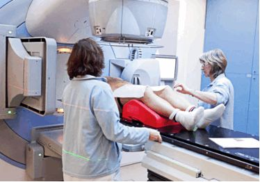

Cele mai întâlnite tipuri de tratament sunt: 1. Supravegherea active. Este posibil să vi se efectueze periodic teste de sânge PSA (antigen specific prostatei), examene rectale, ultrasunete și biopsii pentru a vedea dacă cancerul se înrăutățește. Dacă începe să crească sau să se răspândească, puteți apela la alte tratamente. 2. Intervenție chirurgicală. Este o opțiune dacă sunteți sănătos și cancerul nu s-a răspândit. Există mai multe tipuri. Medicul dumneavoastră vă poate îndepărta numai prostata. Sau ar putea să ia și țesutul din jur. 3. Terapie cu radiații. Acest tratament folosește fascicule cu energie ridicată (asemănătoare cu razele X) pentru a ucide cancerul. Este adesea o alegere pentru bărbații în vârstă și pentru cei cu alte probleme de sănătate. De asemenea, s-ar putea să aveți nevoie de terapie cu radiații după operație pentru a scăpa de celulele canceroase rămase în urmă. De asemenea, ajută la cancerul care s-a răspândit până la os.
4. Terapia hormonală. Celulele canceroase de prostată au nevoie de hormoni sexuali masculini, cum ar fi testosteronul, pentru a continua să crească. Celulele maligne prostatice sunt susținute de testosteron în procesul de creștere și înmulțire, de aceea, scăderea afluxului de testosteron poate duce la încetinirea creșterii tumorale sau chiar apoptoza (moartea) celulelor maligne. Optiunile de terapie hormonală includ: 1. Medicamente care vor împiedica organismul să producă testosteron. Anumite medicamente – cunoscute sub numele de hormoni care eliberează hormoni luteinizanți LHNR (agoniști LHRH) sau antagoniști ai hormonului care eliberează gonadotropina (GnRH) – împiedică producerea de testosteron de către testicule. 2. Medicamente care blochează testosteronul să ajungă la celulele canceroase. Aceste medicamente, cunoscute sub numele de anti-androgeni, sunt administrate de obicei împreună cu agoniștii LHRH. Aceasta pentru că agoniștii LHRH pot provoca la inițierea tratamentului o creștere temporară a testosteronului, înainte ca nivelul de testosteron să scadă. 3. Chirurgie pentru îndepărtarea testiculelor (orhiectomie) Tratamentul hormonal este adesea utilizat dacă cancerul s-a răspândit în afara prostatei. Este, de asemenea, utilizat dacă cancerul rămâne sau revine după tratamentul cu intervenții chirurgicale sau radiații. Nu vindecă cancerul. Scopul terapiei hormonale este de a încetini creșterea cancerului și de a crește supraviețuirea, maximizând în același timp calitatea vieții. Crioterapia. Dacă aveți cancer precoce de prostată, medicul dumneavoastră ar putea alege să distrugă celulele canceroase prin înghețarea acestora. Vor pune ace mici sau sonde în prostată pentru a furniza gaze foarte reci care distrug celulele. Medicul dumneavoastră vă poate sugera criochirurgia glandei întregi pentru pacienții cu cancer de prostată localizat cu risc scăzut și mediu, care nu sunt potriviți nici pentru prostatectomie radicală, nici pentru radioterapie.
Acest tratament folosește medicamente pentru micșorarea sau distrugerea celulelor canceroase de prostată. Puteți lua medicamentele pe cale orală sau le puteți injecta în fluxul sanguin. Majoritatea bărbaților cu cancer precoce de prostată nu suferă de chimioterapie. De obicei, este doar pentru cazuri avansate sau când cancerul s-a răspândit în alte părți ale corpului.